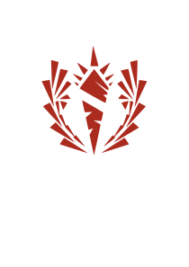

leikurinn From the depths
Bjartur Sigurjónsson - VEFÞ1VG05AU Verkefni 7
Hvað er From the depths?
From the depths gengur út á að búa til stríðs tæki og nota og nota þau til að berjast gegn andstæðingum. Þetta er mjög skapandi leikur þar sem maður hefur aðgang að yfir þúsund kubba tegundum.
From the depths kom fyrst út í public beta fyrst út árið 2013 en kom út 6 nóvember 2020
Mörg mismunandi mode eru í boði í leiknum og þau eru öll opin fyrir allskonar aðferðum spilarans til að spila leikinn, þau mode sem eru í boði í leiknum eru:
- Design mode : þú getur byggt hvað sem þú villt, hlaðið inn og eitt þínum eigin og annara manna vélum.
- Campaingn : þú þarft að fá efnivið á ákveðnum stöðum og með því að vinna óvini til að byggja upp heri og nota þá til að vinnast á öllum andstæðingunum.
- Story missions : stutt verkefni þar sem þú byrjar með eitthvað ákveðin her og stjórnar honum til að vinnast á inkomandi árás.
- Adventure : þú þarft að byggja upp vélina þína á meðan óvinir koma að þér úr öllum áttum
- Battels : þú getur set upp bardaga og séð hvernig hann fer. Fólk setur upp mót þar sem fólk sendir inn sínar vélar og þá er þetta mode notað til að seta upp bardagana.
Leikurinn er þekktur fyrir að vera einstaklega flókin og þá sérstaklega til að byrja með þar sem þú færð allt í hendurnar á sama tíma þegar þú byrjar leikinn og þarft að kunna á marga hluta þess til að koma einhverju í gang. Þó er innbyggð kennsla í leiknum en eins og martinciopants sagði svo vel „The game has less og a learning curve and more off a learning cliff, on fire, covered in bears“.
Factions
Í leiknum er heill hellingur af innbyggðum vélum sem eru notaðar sem andstæðingar. Vélarnar eru flokkaðar í 7 fylkingar og hefur hver fylking sín einkenni og sögu.
- Deepwater guard
- kaupmenn frá Cold Loch
- Gamaldags vélar, að mestu skip.
- Notar mest hæg skjótandi fallbyssur með stórum skeljum
- Oft stórar vélar gerðar úr lélegum efnivið og lítill skotkraftur miðað við stærð
- Onyx watch
- upprunalegu kaupmenn landsins og eiga þar djúpar rætur
- Skipin þeirra líkjast oft kastölum
- Nota mikið stórar fallbyssur
- Oft stór skip sem hafa hálftóm rími
-  White fleyers
- ofsatrúar sem tilbiðja zealots
- Nota mikið hvöss horn
- Nota mest hraðskjótandi byssur
- Ráðast oft á með því að klessa á andstæðing sinn
-
 Twin guard
Twin guard
- flúið AI búið til af Scarlet dawn
- Hafa tvær gerðir, karlkyns skip sem bera fallbyssur og flugskeyti, og kvenkyns skip sem bera flugskeyti og laesera.
- Karlkyns skip eru gerð úr alloy og eða metal og kvenkyns skip eru gerð af mestu úr alloy.
- Þeir nota skyldi lítið
- Þeir hafa nokkrar flugvélar en eru lang mest með skip
- Lighning hoods
- fylkið var stofnað eftir að kapteinn þeirra náði að stela tækni annara fylkja
- Þeir fókusar á mjög hraðar vélar
- Nota mest laeser og pac vopn
- Þeir hara margar góðar flugvélar
- Steel striders
- nútímalegur her
- Mest lang drifa hraðsjóðandi byssur og langdrifa flugskeyti
- All járn að utan
- Notar lítið framtíðarleg vopn, eins og laesers og pac
- Grey talons
- ættbálkur loftbúa
- Allar vélar fljúga
- Að mestu nota byssur
- Nokkrir stílar
- Scarlet dawn
- koma til þessa hluta heims í leit af auðlindum
- 4 klasa véla kerfi
- Nota mikið sjálfsvarnar búnað
- Annað hvort léttar vélar með litlum sem engum skjöldum eða mjög þundar og ýkt margir skyldir
Loka orð
Persónulega finnst mér eitt það besta við leikin er að óvinirnir og þú sem spilar hafið aðgang að sömu kubbum og allt sem þeir gera gætir þú gert. Flestir óvinir eru einnig gerðir af mjög góðum spiluðum sem hafa sent inn sínar vélar sem hafa svo verið notaðar í leikinn.

Þó að leikurinn sé nú komin út og er ekki lengur í beta vantar en að slípa leikin, sumir hlutir hafa ekki breyst síðan í mjög snemma í ferlinu. t.d. eru sum hljóð mjög skerandi og leiðinleg, þar á meðal smg hlóðið:
From the depths er uppáhalds leikurinn minn og þó að ég sé nú þegar búin að spila leikinn í meira en 300 klukkutíma samtals þá hef ég bara rétt byrjað skrapa af ystu brún af því sem leikurinn hefur upp á að bjóða.